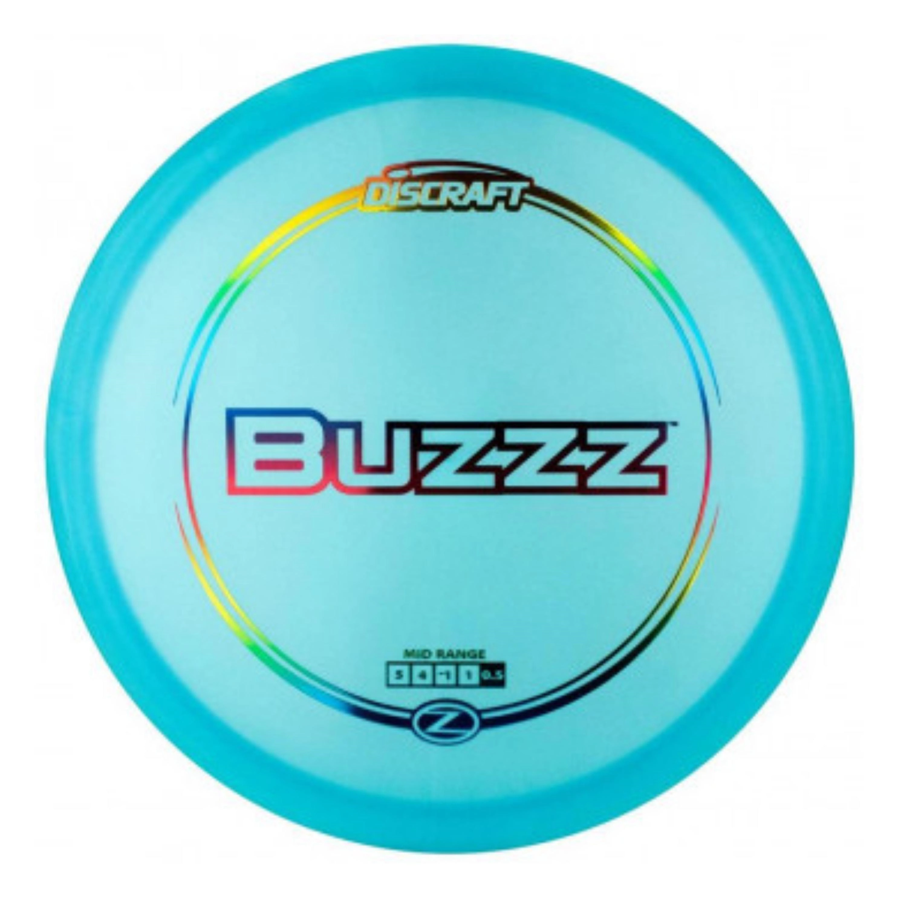

Discs

Buzzz
Speed: 5
Glide: 4
Turn: -1
Fade: 1
Stability: 0.5
The Buzzz disc is a popular midrange disc golf disc manufactured by Discraft. Known for its versatility and reliability, the Buzzz offers a stable flight path, making it a go-to choice for players of all skill levels. It features a smooth, consistent glide and is designed to handle various throwing styles and power levels. The Buzzz's ability to hold any line you put it on, whether for straight shots, hyzers, or anhyzers, has made it a staple in many disc golfers' bags. Its reliability in various wind conditions and its comfortable grip contribute to its reputation as one of the most trusted discs in the sport